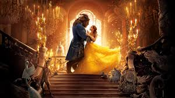
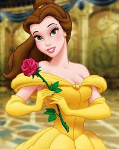
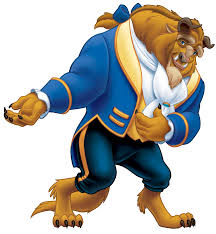
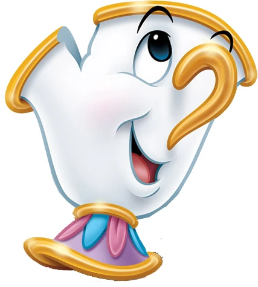

A Bela e a Fera
1991
A animação clássica da Disney que apresentou ao mundo a história de Bela e do príncipe amaldiçoado.
Beauty and the Beast (Bela e a Fera) é uma obra clássica da animação que encanta gerações ao combinar romance, fantasia e importantes lições sobre empatia e respeito. A história acompanha Bela, uma jovem inteligente e sonhadora, que encontra um misterioso príncipe amaldiçoado a viver na forma de uma fera até que aprenda o verdadeiro significado do amor. Com uma narrativa envolvente, personagens marcantes e uma trilha sonora inesquecível, o filme destaca valores como a beleza interior, a coragem e a importância de enxergar além das aparências. Reconhecido mundialmente, o longa tornou-se um dos maiores sucessos da animação e permanece como uma referência atemporal do cinema familiar.

A Bela e a Fera é um filme que conta a história de Bela, uma jovem inteligente e bondosa que vive em uma pequena aldeia. Sua vida muda quando ela passa a morar em um castelo de uma Fera, que na verdade é um príncipe enfeitiçado. Com o tempo, Bela aprende a enxergar além da aparência e descobre a bondade que existe dentro dele. O filme transmite importantes mensagens sobre amor, respeito, amizade e a importância de valorizar o que há no coração das pessoas.
Clique no nome de cada personagem para acessar suas informações.
Bela é uma jovem que vive em uma pequena aldeia e se destaca por sua inteligência, bondade e amor pelos livros. Diferente das outras pessoas da vila, ela sonha com aventuras, e deseja conhecer o mundo além do lugar onde mora. Sua personalidade forte e seu coração generoso fazem dela uma personagem admirada por muitos.
Diferente dos outros habitantes da vila, que se contentam com a rotina, Bela sonha em explorar além das fronteiras conhecidas, buscando experiências que a façam crescer e aprender. Sua inteligência aguçada permite que compreenda rapidamente situações complexas, e sua bondade faz com que todos que a conhecem sintam respeito e afeto por ela. Bela não apenas lê sobre aventuras, mas inspira outros a acreditarem que é possível transformar sonhos em realidade. Com um espírito indomável e um coração generoso, ela se torna uma figura admirada e querida, não apenas por sua aldeia, mas por todos que cruzam seu caminho.
Inteligente e corajosa.
Ama livros e conhecimento.
Não se deixa infuenciar oela opinião da vila.
Paige O'Hara — Bela
Ju Cassou — Bela
Emma Watson — Bela
Flávia Saddy — Bela (dublagem brasileira)
A BELA APARECE EM OUTRO FILME DA DISNEY:
Em uma cena de The Hunchback of Notre Dame, é possível ver Bela caminhando pela cidade segurando um livro.
BELA USA AZUL POR UM MOTIVO:
O vestido azul a destaca dos moradores da vila, mostrando que ela é diferente e não segue a multidão.

história de A Bela e a Fera começa quando um príncipe arrogante e egoísta se recusa a ajudar uma velha senhora que,na verdade, era uma feiticeira. Como punição por sua falta de bondade, ele é transformado em uma terrível Fera, e todos os habitantes de seu castelo também são enfeitiçados. A única maneira de quebrar a maldição é aprender a amar alguém sinceramente e receber esse amor de volta antes que a última pétala de uma rosa encantada caia.
Tem uma das maiores evoluções da Disney.
Aprende a ser gentil e pensar nos outros.
Muitos fãms consideram sua transformação emocional a melhor parte da história.
Robby Benson — Fera / Príncipe Adam
Garcia Júnior — Fera / Príncipe Adam
Dan Stevens — Fera / Príncipe Adam
Márcio Simões — Fera (dublagem brasileira)

Entre os habitantes do castelo estão Lumière, transformado em um candelabro; Horloge, transformado em um relógio; e Madame Samovar, transformada em um bule de chá. Apesar da tristeza causada pela maldição, os habitantes do castelo nunca perdem a esperança de que um dia tudo volte ao normal.
Engraçado e carismático.
Sempre tenta juntar Bela e a Fera.
É um dos objetos encantados mais queridos.
Jerry Orbach — Lumière
Ivon Curi — Lumière
Ewan McGregor — Lumière

Os empregados do castelo foram transformados em objetos domésticos, mas mantiveram suas personalidades e esperanças.
Fofo e inocente.
Conquista quase todo mundo que assiste ao filme.

Os personagens de A Bela e a Fera são muito marcantes. Bela é uma jovem corajosa, inteligente e apaixonada por livros. A Fera, apesar da aparência assustadora, possui um coração bondoso. Outros personagens importantes são Lumière, Horloge, Madame Samovar e Zip, que ajudam Bela e a Fera ao longo da história.
Responda às perguntas, anote a letra escolhida em cada uma e descubra qual personagem combina mais com sua personalidade!
Você é uma pessoa curiosa, inteligente e sonhadora. Gosta de aprender e acredita que existe muito para descobrir no mundo!
Você é corajoso, determinado e tem muito potencial para crescer. Assim como a Fera, pode aprender com suas experiências e se tornar uma pessoa melhor.
Você é alegre, comunicativo e gosta de animar o ambiente. Sua energia ajuda a tornar os momentos especiais para as pessoas ao seu redor!
Você é acolhedor, gentil e atencioso. Gosta de cuidar das pessoas e valoriza os laços de amizade e família.

Empate? Se duas letras tiverem a mesma quantidade de respostas, você pode se identificar com os dois personagens!
A história de A Bela e a Fera começa quando um príncipe arrogante e egoísta se recusa a ajudar uma velha senhora que, na verdade, era uma feiticeira. Como punição por sua falta de bondade, ele é transformado em uma terrível Fera, e todos os habitantes de seu castelo também são enfeitiçados. A única maneira de quebrar a maldição é aprender a amar alguém sinceramente e receber esse amor de volta antes que a última pétala de uma rosa encantada caia.
A rosa encantada representa o tempo que resta para a Fera aprender a amar e receber amor verdadeiro. Explore as etapas da maldição!
Imagine a rosa perdendo suas pétalas:
| Etapa | Rosa | Significado |
|---|---|---|
| 1 | 🌹🌹🌹🌹🌹 | A maldição começa. |
| 2 | 🌹🌹🌹🌹 | A Fera precisa mudar. |
| 3 | 🌹🌹🌹 | Bela começa a conhecê-lo melhor. |
| 4 | 🌹🌹 | O tempo está acabando. |
| 5 | 🥀 | A última pétala representa o fim do prazo. |
Se a Fera não aprender a amar e não receber amor verdadeiro antes que a última pétala caia, a maldição não poderá ser quebrada.
O castelo encantado é um dos elementos mais fascinantes da história. Após a maldição, o lugar que antes era cheio de vida tornou-se isolado e misterioso. Seus corredores longos, salões luxuosos e jardins abandonados criam uma atmosfera mágica e ao mesmo tempo melancólica. Os empregados do castelo foram transformados em objetos domésticos, mas mantiveram suas personalidades e esperanças. Entre eles estão Lumière, transformado em um candelabro; Horloge, transformado em um relógio; e Madame Samovar, transformada em um bule de chá. Apesar da tristeza causada pela maldição, os habitantes do castelo nunca perdem a esperança de que um dia tudo volte ao normal. Quando Bela chega ao local, o castelo ganha uma nova energia, tornando-se um espaço de amizade, aprendizado e transformação. O ambiente encantado simboliza a mudança interior da Fera e a possibilidade de redenção por meio do amor e da bondade.
A trilha sonora de A Bela e a Fera é considerada uma das mais memoráveis da história do cinema de animação. As músicas ajudam a desenvolver a narrativa, apresentar os personagens e transmitir emoções importantes ao público. A canção “Belle” apresenta a protagonista e mostra como ela se sente diferente dos demais moradores de sua aldeia. Já “Be Our Guest” é uma música alegre e divertida que destaca a hospitalidade dos moradores encantados do castelo. A canção-tema “Beauty and the Beast” acompanha um dos momentos mais emocionantes do filme, mostrando o crescimento do carinho entre Bela e a Fera. Composta por Alan Menken e Howard Ashman, a trilha sonora conquistou diversos prêmios e tornou-se um dos grandes motivos do sucesso do filme. As músicas permanecem populares até hoje e são lembradas por diferentes gerações de espectadores.
Em conclusão, A Bela e a Fera é muito mais do que uma simples história de amor. O filme combina fantasia, aventura, romance e importantes ensinamentos sobre valores humanos. A emocionante jornada de Bela e da Fera demonstra que as pessoas podem mudar quando recebem compreensão, carinho e uma oportunidade para crescer. Além disso, a beleza do castelo encantado, os personagens cativantes, as músicas inesquecíveis e a mensagem inspiradora contribuem para tornar a obra um dos maiores clássicos da animação mundial. Sua história continua encantando crianças, jovens e adultos, provando que o amor verdadeiro é capaz de superar preconceitos, quebrar barreiras e transformar vidas.
A principal moral da história é que a verdadeira beleza não está na aparência física, mas no caráter e nas atitudes das pessoas. Ao longo da narrativa, Bela aprende a conhecer a Fera além de sua aparência assustadora e descobre que ele possui qualidades como generosidade, coragem e sensibilidade. Da mesma forma, a Fera aprende a controlar sua raiva, a ser mais gentil e a colocar o bem-estar dos outros acima de seus próprios interesses. O filme ensina que julgamentos baseados apenas na aparência podem ser injustos e enganosos. Também mostra a importância do respeito, da empatia e da capacidade de mudar para melhor. Essas lições fazem com que a história continue atual e relevante mesmo muitos anos após seu lançamento.
A Bela e a Fera - 2017
Sing Me a Story with Belle - 1995-1997
Descubra as versões de A Bela e a Fera e conheça as vozes que deram vida aos personagens!
1991
A animação clássica da Disney que apresentou ao mundo a história de Bela e do príncipe amaldiçoado.
1997
Uma aventura especial que acontece durante o período em que Bela vive no castelo.
1998
Uma coleção de histórias que apresenta novas aventuras dos habitantes do castelo.
2017 — Live-action
Uma versão com atores reais, protagonizada por Emma Watson e Dan Stevens.
Bela também protagonizou a série infantil Sing Me a Story with Belle, exibida entre 1995 e 1997.
As vozes ajudam a transmitir as emoções, a personalidade e o encanto de cada personagem. Conheça alguns dos artistas da animação de 1991!
✨ As informações de dublagem apresentadas aqui se referem à animação de 1991. O elenco do live-action é apresentado separadamente.